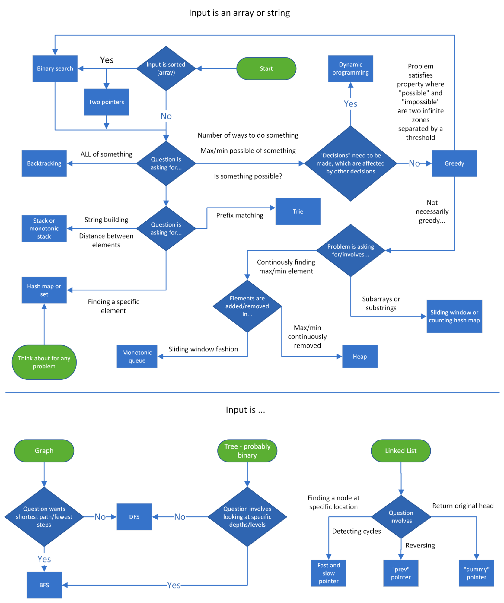

Introduction
Welcome to the Python notebook. This section contains THREE main parts: numpy and pandas for Machine Learning / Data Scientist, Data Structure for Engineer, and Some interview questions.
Pandas and Numpy
Check here for all Topics related to:
- Relative Path vs Absolute Path
- Read & Save .csv file
- Data consolidation
- Merge
- Join
- Concat
- Data Manipulation
- Data Shape
- Data Type
- Missing Value
- Slicing
- Filtering
- Aggregation
- Sorting
- Visualization
- Pie Chart
- Bar Chart
- Scatter Plot
- Histogram
- Heatmap
- Pair Plot
- Count Plot
- Line Plot
Data Structure
Introduction to Data Structures
Big O is a notation used to describe the computational complexity of an algorithm. The computational complexity of an algorithm is split into two parts: time complexity and space complexity.
- The time complexity of an algorithm is the amount of time the algorithm needs to run relative to the input size.
- The space complexity of an algorithm is the amount of memory allocated by the algorithm when run relative to the input size.
Arrays and Strings
### Two pointers: one input, opposite ends
def fn(arr):
left = ans = 0
right = len(arr) - 1
while left < right:
# do some logic here with left and right
if CONDITION:
left += 1
else:
right -= 1
return ans
### Two pointers: two inputs, exhaust both
def fn(arr1, arr2):
i = j = ans = 0
while i < len(arr1) and j < len(arr2):
# do some logic here
if CONDITION:
i += 1
else:
j += 1
while i < len(arr1):
# do logic
i += 1
while j < len(arr2):
# do logic
j += 1
return ans
def fn(arr):
left = ans = curr = 0
for right in range(len(arr)):
# do logic here to add arr[right] to curr
while WINDOW_CONDITION_BROKEN:
# remove arr[left] from curr
left += 1
# update ans
return ans
def fn(arr):
prefix = [arr[0]]
for i in range(1, len(arr)):
prefix.append(prefix[-1] + arr[i])
return prefix
Hashing
- Only thing we should know ( Use dict and set )
- Checking for exist: LC ( 217, 1436, 1496)
- Counting: LC (1748, 1394, 1207, 451, 1512, 930, 1685, 567)
- General: LC (205, 290, 791, 1657)
from collections import defaultdict
Linked Lists
- Fast and Slow Pointer
def fn(head):
slow = head
fast = head
ans = 0
while fast and fast.next:
# do logic
slow = slow.next
fast = fast.next.next
return ans
- Reverse a LinkedList
def fn(head):
curr = head
prev = None
while curr:
next_node = curr.next
curr.next = prev
prev = curr
curr = next_node
return prev
Stacks and Queues
- from collections import deque
- deque.append(xxx)
- deque.popleft()
- Find number of subarrays that fit an exact criteria
from collections import defaultdict
def fn(arr, k):
counts = defaultdict(int)
counts[0] = 1
ans = curr = 0
for num in arr:
# do logic to change curr
ans += counts[curr - k]
counts[curr] += 1
return ans
- Monotonic Increasing Stack
def fn(arr):
stack = []
ans = 0
for num in arr:
# for monotonic decreasing, just flip the > to <
while stack and stack[-1] > num:
# do logic
stack.pop()
stack.append(num)
return ans
Trees and Graphs
- Binary Tree (DFS, recursive)
def dfs(root):
if not root:
return
ans = 0
# do logic
dfs(root.left)
dfs(root.right)
return ans
- Binary Tree (DFS, Iterative)
def dfs(root):
stack = [root]
ans = 0
while stack:
node = stack.pop()
# do logic
if node.left:
stack.append(node.left)
if node.right:
stack.append(node.right)
return ans
- Binary Tree (BFS, Recursive)
from collections import deque
def fn(root):
queue = deque([root])
ans = 0
while queue:
current_length = len(queue)
# do logic for current level
for _ in range(current_length):
node = queue.popleft()
# do logic
if node.left:
queue.append(node.left)
if node.right:
queue.append(node.right)
return ans
- Binary Search Tree (example)
Trick: For binary search tree, a depth first search with inorder will give you the sorted list
def rangeSumBST(self, root: Optional[TreeNode], low: int, high: int) -> int:
if not root:
return 0
ans = 0
if low <= root.val <= high:
ans += root.val
if low < root.val:
ans += self.rangeSumBST(root.left, low, high)
if root.val < high:
ans += self.rangeSumBST(root.right, low, high)
return ans
- Graph: DFS (recursive)
def fn(graph):
def dfs(node):
ans = 0
# do some logic
for neighbor in graph[node]:
if neighbor not in seen:
seen.add(neighbor)
ans += dfs(neighbor)
return ans
seen = {START_NODE}
return dfs(START_NODE)
- Graph: DFS (iterative)
def fn(graph):
stack = [START_NODE]
seen = {START_NODE}
ans = 0
while stack:
node = stack.pop()
# do some logic
for neighbor in graph[node]:
if neighbor not in seen:
seen.add(neighbor)
stack.append(neighbor)
return ans
- Graph: BFS
from collections import deque
def fn(graph):
queue = deque([START_NODE])
seen = {START_NODE}
ans = 0
while queue:
node = queue.popleft()
# do some logic
for neighbor in graph[node]:
if neighbor not in seen:
seen.add(neighbor)
queue.append(neighbor)
return ans
Heaps
- Find top k elements with heap
import heapq
def fn(arr, k):
heap = []
for num in arr:
# do some logic to push onto heap according to problem's criteria
heapq.heappush(heap, (CRITERIA, num))
if len(heap) > k:
heapq.heappop(heap)
return [num for num in heap]
Binary Search
- Binary search
def fn(arr, target):
left = 0
right = len(arr) - 1
while left <= right:
mid = (left + right) // 2
if arr[mid] == target:
# do something
return
if arr[mid] > target:
right = mid - 1
else:
left = mid + 1
# left is the insertion point
return left
- Binary search: duplicate elements, left-most insertion point
def fn(arr, target):
left = 0
right = len(arr)
while left < right:
mid = (left + right) // 2
if arr[mid] >= target:
right = mid
else:
left = mid + 1
return left
- Binary search: duplicate elements, right-most insertion point
def fn(arr, target):
left = 0
right = len(arr)
while left < right:
mid = (left + right) // 2
if arr[mid] > target:
right = mid
else:
left = mid + 1
return left
Greedy Algorithms
- Binary search: for greedy problems (Minimum)
def fn(arr):
def check(x):
# this function is implemented depending on the problem
return BOOLEAN
left = MINIMUM_POSSIBLE_ANSWER
right = MAXIMUM_POSSIBLE_ANSWER
while left <= right:
mid = (left + right) // 2
if check(mid):
right = mid - 1
else:
left = mid + 1
return left
- Binary search: for greedy problems (Maximum)
def fn(arr):
def check(x):
# this function is implemented depending on the problem
return BOOLEAN
left = MINIMUM_POSSIBLE_ANSWER
right = MAXIMUM_POSSIBLE_ANSWER
while left <= right:
mid = (left + right) // 2
if check(mid):
left = mid + 1
else:
right = mid - 1
return right
Backtracking
- Backtracking
def backtrack(curr, OTHER_ARGUMENTS...):
if (BASE_CASE):
# modify the answer
return
ans = 0
for (ITERATE_OVER_INPUT):
# modify the current state
ans += backtrack(curr, OTHER_ARGUMENTS...)
# undo the modification of the current state
return ans
Dynamic Programming
- Dynamic programming: top-down memoization
def fn(arr):
def dp(STATE):
if BASE_CASE:
return 0
if STATE in memo:
return memo[STATE]
ans = RECURRENCE_RELATION(STATE)
memo[STATE] = ans
return ans
memo = {}
return dp(STATE_FOR_WHOLE_INPUT)
Other
- Build a trie
# note: using a class is only necessary if you want to store data at each node.
# Otherwise, you can implement a trie using only hash maps.
class TrieNode:
def __init__(self):
# you can store data at nodes if you wish
self.data = None
self.children = {}
def fn(words):
root = TrieNode()
for word in words:
curr = root
for c in word:
if c not in curr.children:
curr.children[c] = TrieNode()
curr = curr.children[c]
# at this point, you have a full word at curr
# you can perform more logic here to give curr an attribute if you want
return root
Python Questions
- Generate an array of ‘100’ random numbers sampled from a standard
normal distribution using Numpy
np.random.rand(100) will create 100 random numbers generated from standard normal distribution with mean 0 and standard deviation 1.
- How to count the occurrence of each value in a numpy array?
Use numpy.bincount()
>>> arr = numpy.array([0, 5, 5, 0, 2, 4, 3, 0, 0, 5, 4, 1, 9, 9])
>>> numpy.bincount(arr)
The argument to bincount() must consist of booleans or positive integers. Negative integers are invalid.
- What does ravel() function in numpy do?
- What is the meaning of axis=0 and axis=1?
- Feature Engineering:
- Selection
- Feature Importance Report (AWS Sagemaker Wranglering)
- Creation (Existing data points into new features, new attributes)
- Combine multiple columns to one column
- Transformation
- Missing Feature Values (Imputation)
- Scaling Numerical features (standardization / normalization)
- Converting Non-numerical features into numerical features (One-hot, label encoder, word2vec, etc)
- Feature Engineering
- Selection
- Shuffle the data: df = df.sample(frac = 1)
It combines multiple array into a single array
Axis = 0 is meant for reading rows, Axis = 1 is meant for reading columns